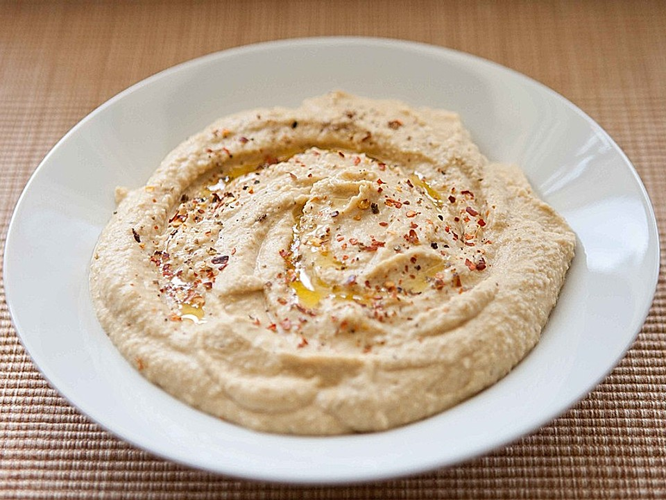

Hummus

Hummus is a delicious spread or dip made from chickpeas,
tahini, lemon, and spices. It’s commonly eaten in the
Middle East and the Mediterranean.
Ingredients
- Chickpeas
- Tahini
- Fresh lemon juice
- Fresh garlic
- Ground Cumin
- Salt
- Olive oil
Instructions
- Find your food processor.
- Add Tahini and lemon juice.
- Let the food processor run for about a minute.
- Now add ingredients as you will.
Make sure you are running the food processor for about a minute after every ingredient.
- Drizzle some cold water during the last minutes of running the food processor.
- You're done!!!